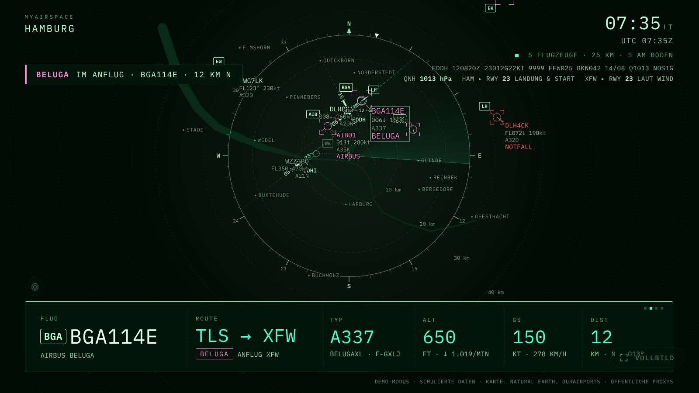

Radar mit Silhouetten
Flugzeuge von oben, nach Typ gezeichnet, mit Flugspur und Datenblock: Rufzeichen, Höhe, Geschwindigkeit.
MyAirspace ist zuerst für den Desktop-Browser gebaut: ein Flugradar um deinen Standort, im Stil von Cockpit-Instrumenten. Kostenlos, ohne Konto, ohne Installation.
Läuft auch auf dem Tablet und als Bild auf dem Fernseher.

Flugzeuge von oben, nach Typ gezeichnet, mit Flugspur und Datenblock: Rufzeichen, Höhe, Geschwindigkeit.
Die Anzeige wechselt zwischen Radar und Tafel und zeigt das nächste Flugzeug und die Überflüge des Tages.
Vom Tower-Radar bis zum Nachtmodus für den abgedunkelten Raum. Den Stil siehst du in der Einrichtung als Vorschau.
Die Adresse aus der Einrichtung im Browser des Fernsehers öffnen oder den QR-Code scannen. Am Apple TV per AirPlay von Mac, iPad oder iPhone, weil tvOS keinen eigenen Browser hat.
Nein. Es zeigt, was die öffentliche Datenquelle empfängt. Lücken sind normal.
Nein. Die Anzeige ist kein Navigationsgerät und keine Flugplanungshilfe.
Ja. Kostenlos und nicht kommerziell.
Luftfahrtkarte im Hintergrund und Wetterradar sind standardmäßig aus und lassen sich in den Einstellungen einschalten. Quellen und Lizenzen stehen in der App und in THIRD_PARTY.md.
Gebaut ist es zuerst für den Desktop-Browser. Tablet und Fernseher gehen auch, wenn deren Browser die Seite öffnen kann. Nicht auf allen Geräten getestet. Am Apple TV geht es per AirPlay von Mac, iPad oder iPhone, weil tvOS keinen eigenen Browser hat.